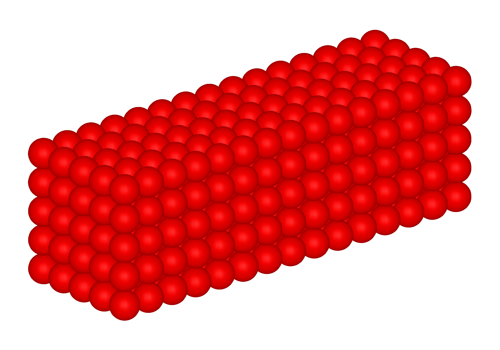
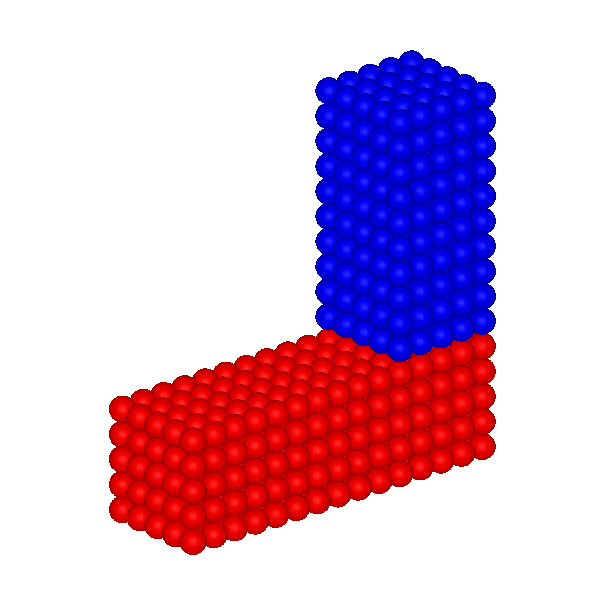
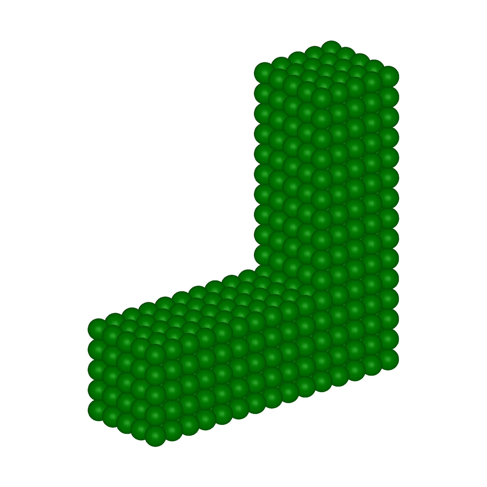
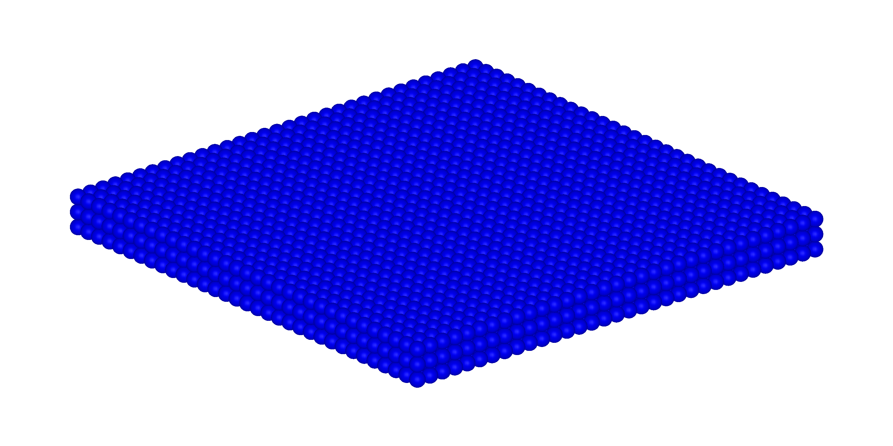
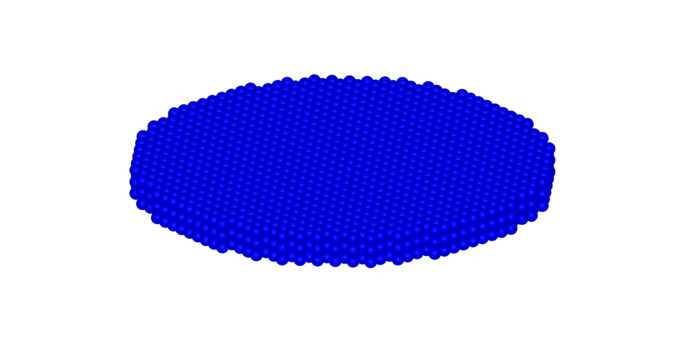

Point clouds
Short guide on how to define point clouds.
Block with uniform distributed points
PointClouds have a method implemented to create a uniform distributed grid of points with lengths lx, ly, lz, and the point spacing Δx.
lx1 = 3
ly1 = 1
lz1 = 1
Δx = 0.2
pc1 = PointCloud(lx1, ly1, lz1, Δx)375-points PointCloud
The optional keyword arguments center_x, center_y, and center_z provide the possibility to specify the position of the PointCloud center. As seen in the image below, pc2 (blue) is positioned with the center-keywords so that it forms a L-shape together with pc1 (red).
lx2 = 1
ly2 = 1
lz2 = 2
pc2 = PointCloud(lx2, ly2, lz2, Δx; center_x=(lx1-lx2)/2, center_z=(lz1+lz2)/2)250-points PointCloud
Merging of multiple point clouds
The point clouds pc1 and pc2 can be merged to create one L-shaped PointCloud for a single body simulation. That can be accomplished with the pcmerge function:
pc = pcmerge([pc1, pc2])625-points PointCloud
Filtering of points regarding their position
To generate more complicated geometries from a uniform distributed block, points can be filtered out. For example, we want to model a cylinder with diameter $\text{\O}$ and thickness $t$:
Ø = 1
t = 0.1
Δx = 0.03
pc0 = PointCloud(Ø, Ø, t, Δx)3267-points PointCloud
Now we filter every point, that lies outside of the cylinder. Therefore, we search for all points that match the condition
\[\sqrt{{x_p}^2 + {y_p}^2} \leq \frac{\text{\O}}{2} \; ,\]
with the $x$- and $y$-coordinate $x_p$ and $y_p$ of each point. The variable cyl_id contains the index of each point that matches this condition. Then we create a new point cloud pc using only the points of pc0 specified in cyl_id.
cyl_id = findall(p -> sqrt(p[1]^2 + p[2]^2) <= Ø/2, eachcol(pc0.position))
pc = PointCloud(pc0.position[:,cyl_id], pc0.volume[cyl_id])2631-points PointCloud
Reading of Abaqus inp-files
Point clouds can be created by conversion from a FEM mesh. Each element is converted to a material point. The point position is defined as the center of the element, and the point volume as the element volume.
To convert a Abaqus FEM mesh to a PointCloud instance, use the read_inp function.
The AbaqusReader.jl package is used to import the mesh. Currently the type of supported elements is limited to C3D4 (:Tet4) and C3D8 (:Hex8). Only one body per inp-file will be correctly imported as a PointCloud instance.